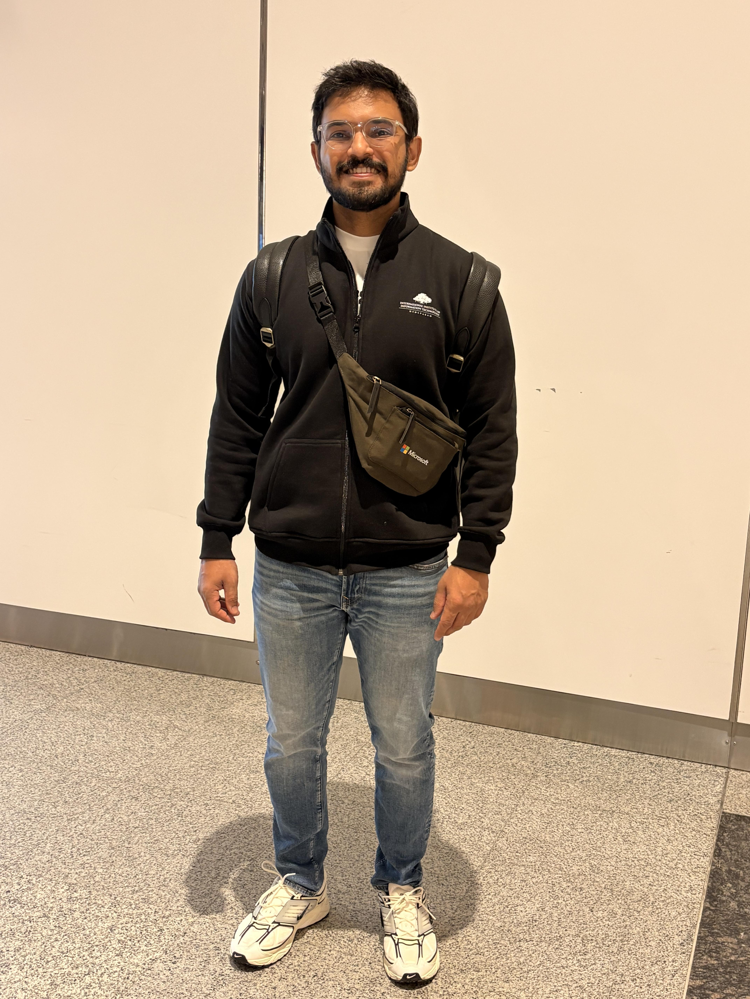

About Me
Sravan Bagalkote
I’m Sravan, with a Computer Science background and 12 years of experience in the software industry. I enjoy building useful things from early ideas and shaping rough thoughts into something clear and practical. Over the years, I’ve worked with different teams, products, and business needs, which has helped me understand both people and systems better. Outside work, I enjoy fitness, learning, and exploring personal projects. This website is a small space where I share what I’m building, learning, and thinking about.

Education
Education
Primary School
1996 - 2004
Little Angels, Surat and St Thomas High School, Hyderabad
High School
2004 - 2007
Sanskar Vidya Bhavan, Bharuch
Intermediate
2007 - 2009
Narayana IIT Academy, Hyderabad
College
2009 - 2013
IIIT Hyderabad
Work
Innopark
Associate Software Engineer
Built a user validation system for user registrations in a games portal
Arcesium
Technical Lead
Primary owner of a core operational UI platform used daily by ~200 analysts and managers across 4–5 reconciler ops teams, improving efficiency in day-to-day reconciliation workflows.
Built the supporting API layer and a thin backend for reconciliation statistics to power dashboards and operational reporting.
Quince
Senior Software Engineer
Early engineer (#3) who helped build and launch the first version of the e-commerce product in ~1 month, owning key architecture decisions end-to-end.
Built major parts of the second-generation storefront that continues to power the live site.
Built an internal portal for product and inventory tracking, improving operational speed and visibility for business teams.
Contributed to early growth by shipping fast and reliably, supporting the business to reach $1M+ annual sales.
Arcesium
Principal Engineer
Building an agentic workflow framework that would help teams to automate internal business processes.
Built backend systems for a low-code/no-code data platform, including a query engine; drove adoption across 25–30 enterprise clients.
Built and scaled a high-performance PnL accounting engine for back-office systems; implemented core changes that increased supported data volume 10× while reducing infrastructure cost ~2×.